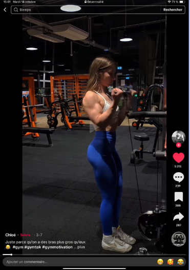
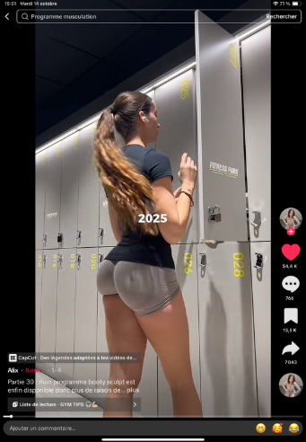
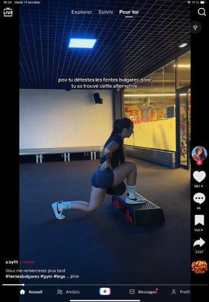
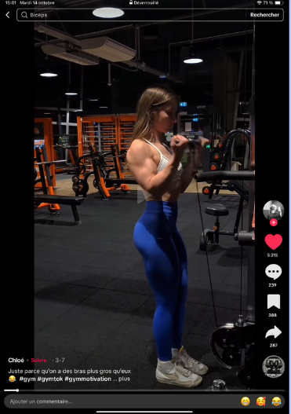
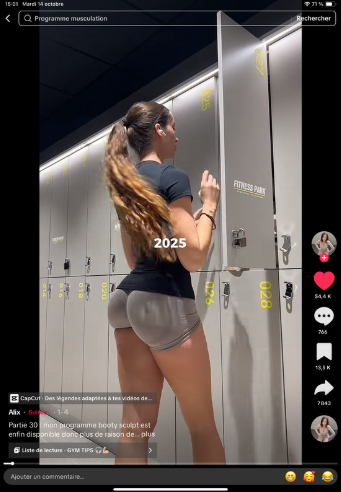
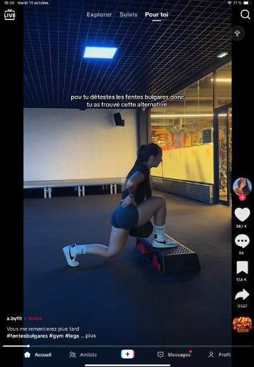

II. Présentation de nos échantillons
Contenu féminin
Échantillon de vidéos féminines analysées (exemples visuels présents dans les slides). Les vidéos féminines mettent souvent en scène des tenues moulantes, la mise en valeur de certaines zones du corps (haut du corps, bas du corps) et une exposition corporelle parfois en espace public (salle de sport).
 





Contenu masculin
Échantillon de vidéos masculines : souvent axé sur le haut du corps (torse), la musculation, avec des mises en scène différentes et des attentes normatives distinctes par rapport au contenu féminin.